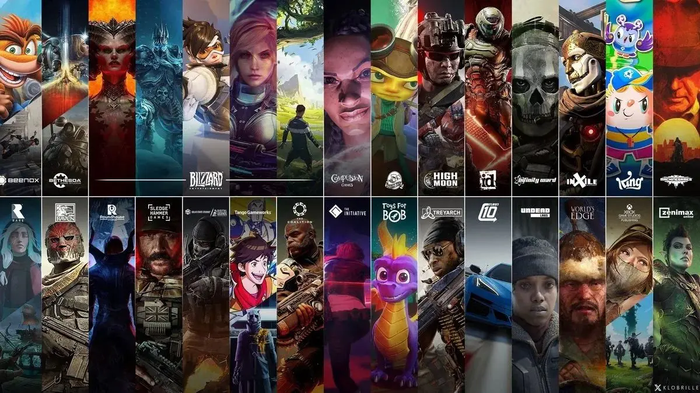
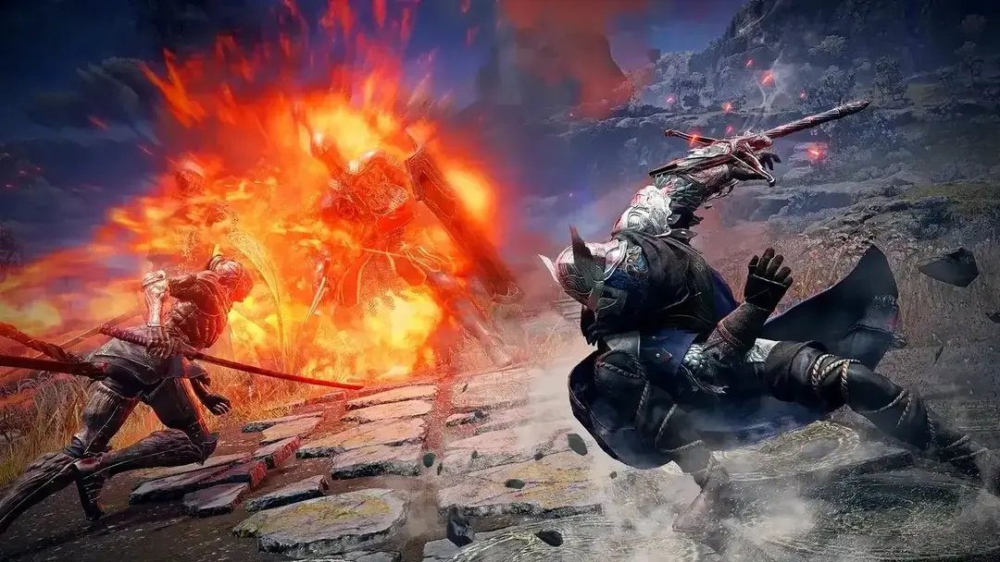

De ce au devenit jocurile AAA atât de neoriginale și plictisitoare?
O analiză a mecanicilor repetitive, a poveștilor lipsite de curaj și a lipsei de idei noi din marile producții.

Cred că orice om care a încercat un joc apărut recent de la un studio AAA a observat problema pe care o au multe dintre aceste titluri. Deși, din punct de vedere tehnologic, sunt impresionante, jocurile moderne nu reușesc întotdeauna să atragă publicul în același mod în care o fac titlurile mai vechi.
În primul rând, trebuie înțeles că, în cazul jocurilor cu bugete foarte mari, se investește enorm și în publicitate. Acestea au avantajul de a fi mult mai vizibile pentru consumatorul obișnuit, care nu este neapărat un mare fan al jocurilor, ci doar își dorește să joace ceva distractiv în timpul liber. Din acest motiv, este destul de greu pentru el să fie investit într-un joc în care primele cinci ore de gameplay sunt formate în mare parte din cutscene-uri și tutoriale pentru o grămadă de mecanici.Înțeleg faptul că, în poziția de creator al unui joc, îți dorești să faci tot ceea ce face și competiția, doar că mai bine. Totuși, nu cred că aceasta este întotdeauna cea mai bună abordare. Mi s-ar părea mult mai interesant dacă unele dintre aceste elemente ar fi introduse treptat pe parcursul poveștii sau dacă jucătorul ar fi lăsat să descopere singur anumite lucruri. Mă refer în principal la informațiile despre obiectele din joc, la modul în care funcționează și la felul în care trebuie folosite. Da, aceste informații trebuie să existe, dar nu sub forma unui pop-up care apare în mijlocul unei lupte sau în timp ce asculți dialogul personajelor.
Dacă vorbim despre dialogul personajelor și despre povești în general, acestea mi se par, de asemenea, mai slabe în multe dintre jocurile moderne. Acest lucru se datorează, în opinia mea, în mare parte fricii de a nu deranja anumite grupuri sociale sau de a nu spune ceva care ar putea fi scos din context. Înțeleg de ce companiile sunt atente la aceste lucruri, dar, în același timp, nu ar trebui ca jocurile să fie și un mod de a evada din realitate? Nu ar trebui creatorii să fie liberi să prezinte o lume fictivă așa cum își doresc? Mai mult decât atât, din câte observ, chiar asta își doresc mulți jucători. Aceștia cer personaje și scenarii mai îndrăznețe, însă pare să existe o frică foarte mare de a nu greși. Sunt curios să văd cum vor suna dialogurile și povestea din GTA 6. Cred că ar fi nevoie ca un joc mai vulgar și mai lipsit de filtre să apară din partea unui studio AAA, pentru a arăta mai clar ce își dorește publicul. Iar dacă acel joc ar fi GTA 6, impactul ar fi cu atât mai mare, având în vedere popularitatea imensă a seriei în întreaga lume.

Un alt lucru care mă deranjează este faptul că jocurile au devenit atât de neoriginale încât, în afară de hartă și personaje, uneori este greu să le diferențiezi. Multe dintre ele folosesc sisteme de combat foarte asemănătoare, inspirate de succesul jocului Elden Ring. Controalele sunt, de asemenea, aproape identice. Înțeleg că jucătorii s-au obișnuit cu aceste sisteme și că nu este neapărat ceva rău, dar mi-ar plăcea să văd mai multe idei noi.
Sincer, mă bucur foarte mult să văd că jocurile indie sunt apreciate din ce în ce mai mult și, pe bună dreptate. Acestea sunt, de multe ori, mult mai originale decât marile titluri produse de studiourile AAA. Sper să vedem o mică schimbare în modul în care marile companii creează jocuri, pentru că nu cred că repetarea la infinit a unei rețete care a funcționat de câteva ori va duce la ceva cu adevărat interesant.